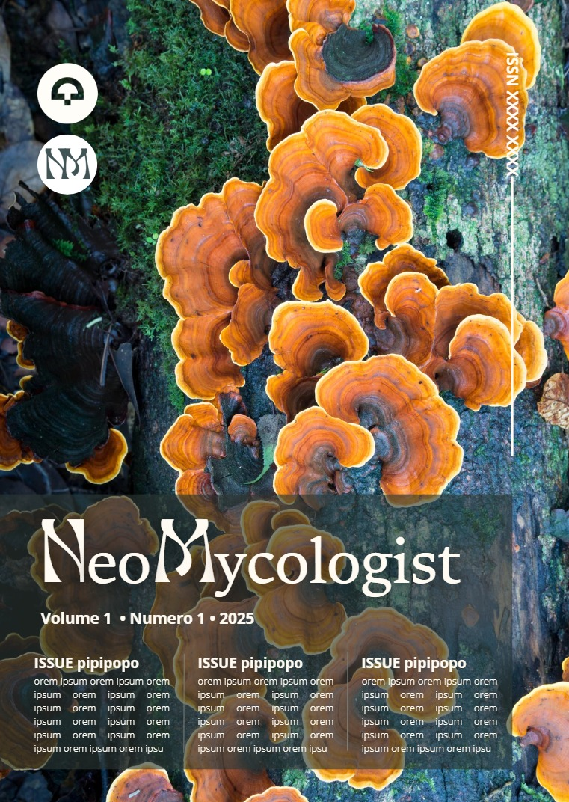
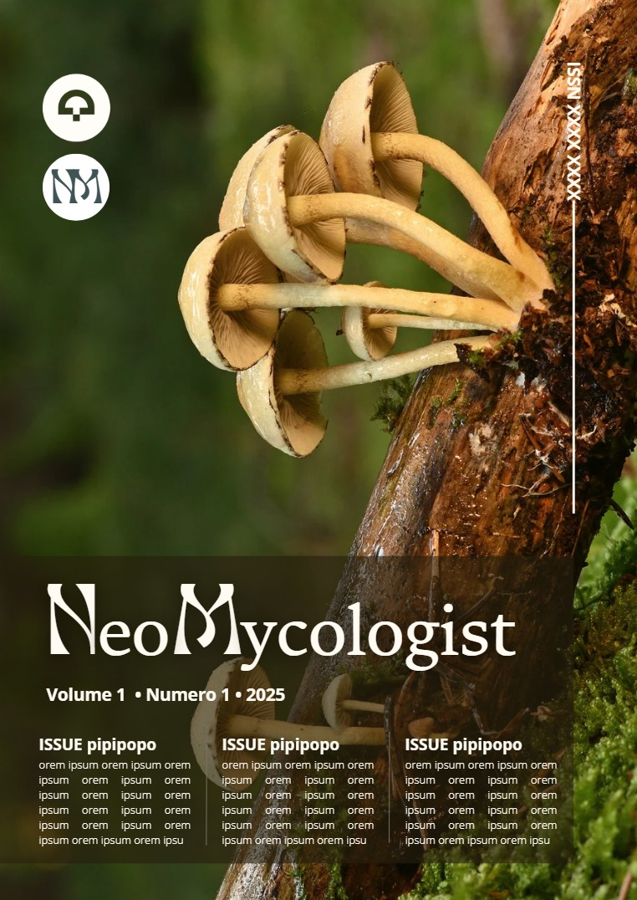
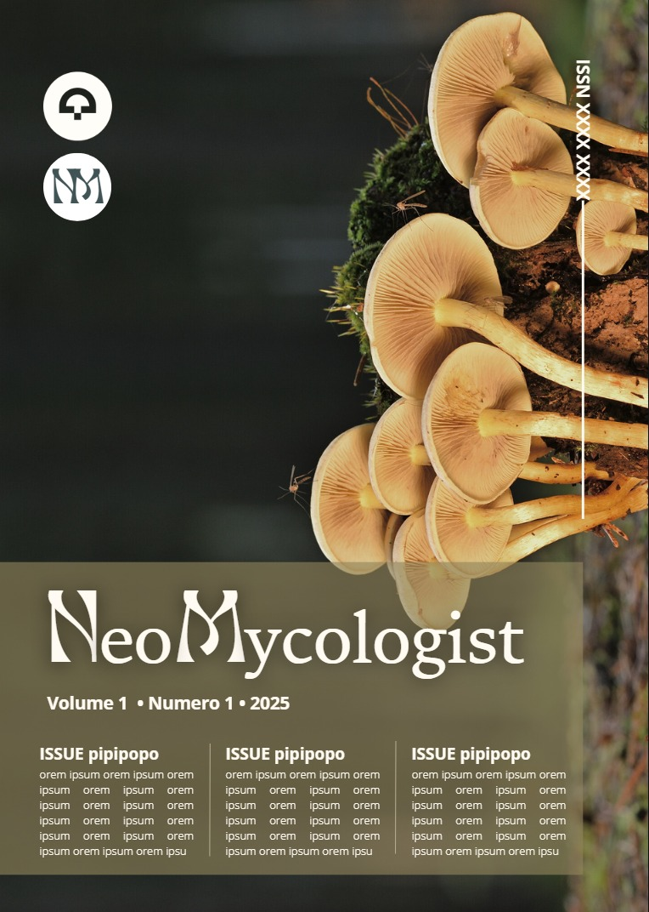
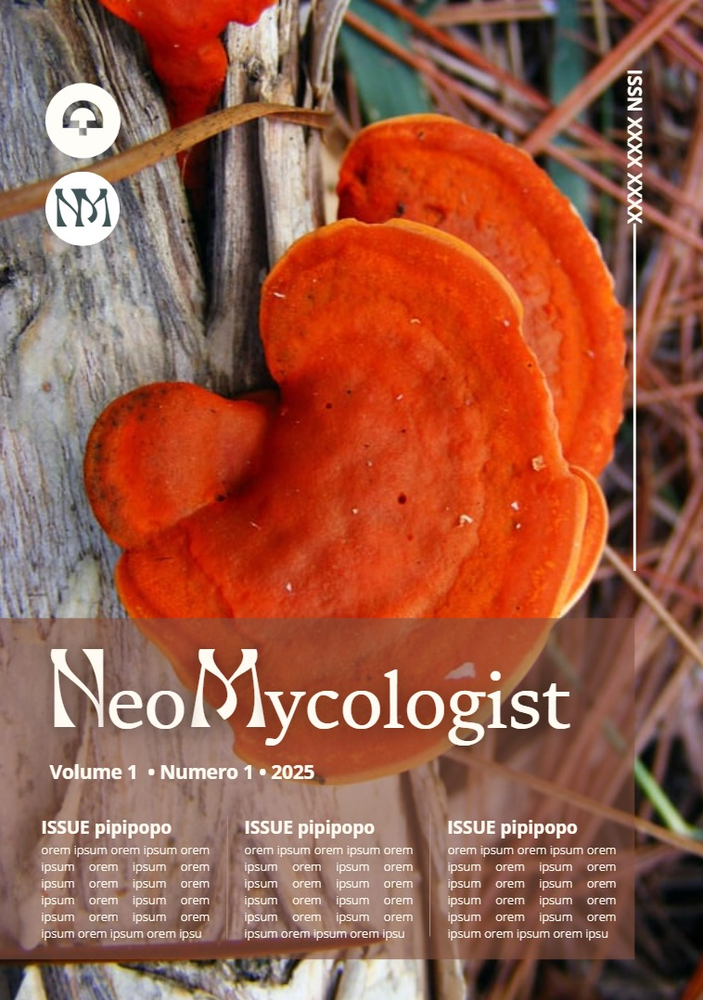

INCT Hongos de Brasil
Cuando se trata del papel biológico en los diferentes biomas, los hongos están al mismo tiempo entre los organismos vivos más importantes y menos caracterizados del planeta. Solo se conocen alrededor de 140 mil especies, de un total estimado de aproximadamente 3.5 millones. Además de su papel esencial en los ecosistemas en el ciclo de nutrientes, los hongos son también una fuente importante de productos bioeconómicos en tres áreas estratégicas para la sostenibilidad de nuestra sociedad: salud, energía y alimentación. Esta brecha en el conocimiento es aún mayor cuando se considera la biodiversidad y el conocimiento del patrimonio genético de la micobiota brasileña.
Fue pensando en este contexto que investigadores de varias universidades e instituciones de investigación de Brasil, tanto del área de micología como de las áreas de bioinformática, bioquímica, biología molecular, evolución, comunicación y tecnología de la información crearon un Instituto Nacional de Ciencia y Tecnología (INCT - FUNGOS_BR). La propuesta es financiada por el Consejo Nacional de Desarrollo Científico y Tecnológico (CNPq) y por el Ministerio de Ciencia, Tecnología e Innovación (MCTI). Tal instituto será un centro de excelencia nacional e internacional en micología para elucidar la biodiversidad, genómica, funcionalidad ecosistémica, prospección de bioinsumos, conservación y aplicaciones de hongos, y organismos similares, en los biomas brasileños, asociados o no a las consecuencias de acciones antrópicas. Tal iniciativa centralizada en la UFRN, cuenta con la participación de investigadores de otras 37 instituciones del país y 6 instituciones extranjeras, con el objetivo de colocar a Brasil en una posición destacada en el conocimiento y en el uso racional y sostenible de su biodiversidad fúngica.
El INCT_Fungos unificará a los investigadores y la infraestructura considerable en las áreas de micología y genómica en el país, creando una red nacional, con interfaz internacional, de especialistas para promover el uso sostenible de los hongos y su aplicación biotecnológica. El centro físico y lógico de esta red será en la Universidad Federal de Rio Grande do Norte (UFRN), con el establecimiento de un banco de preservación de especies fúngicas, integrando datos taxonómicos, evolutivos, filogeográficos, genómicos, funcionales y ambientales (metagenomas y metatranscriptomas) interconectados con colecciones biológicas institucionales, así como la sede del portal de análisis bioinformático y de material educativo para la popularización del conocimiento científico junto a la sociedad, centros de preservación ambiental y fomento de la enseñanza en los niveles básico, tecnológico y superior. Los recursos aprobados también serán utilizados para la formación de estudiantes de grado y posgrado y para promover interacciones y colaboraciones científicas eficientes en el ámbito nacional e internacional. Esta base nacional de conocimiento también generará datos para su uso en modelos de inteligencia artificial, cuyos resultados y análisis estarán disponibles de forma interactiva para investigadores de la biodiversidad brasileña.
Objetivos
Objetivo General
Establecer la Red INCT-Hongos de Brasil como un centro de excelencia nacional e internacional en micología, con el fin de elucidar la biodiversidad, genómica, funcionalidad ecosistémica y aplicaciones de hongos y organismos similares a hongos en biomas y microhábitats brasileños.
Objetivos Específicos
- Contribuir a la formación de recursos humanos a nivel de grado y posgrado. El INCT FUNGOS_BR está compuesto por investigadores que orientan en 39 Programas de Posgrado en las cinco diferentes regiones brasileñas.
- Contribuir a la formación continua de investigadores y estudiantes, principalmente en grupos de hongos desatendidos, a través de la oferta de cursos remotos de grado y posgrado en micología, biotecnología fúngica y bioinformática aplicada ofrecidos por profesores de Brasil y del exterior.
- Desarrollar cursos de corta duración y talleres avanzados (en línea y/o presenciales) para capacitación en metodologías ómicas, de culturomía, bioensayos, química y taxonomía de hongos.
- Establecer alianzas estratégicas con instituciones líderes en micología y biotecnología fúngica en diferentes continentes e implementar un programa de movilidad internacional para investigadores y estudiantes del INCT-Fungos do Brasil.
- Fomentar y organizar congresos internacionales bienales sobre biodiversidad fúngica y sus aplicaciones biotecnológicas.
- Prospectar, identificar y caracterizar hongos con potencial biotecnológico en ecosistemas brasileños y microhábitats contaminados por metales pesados y pesticidas, con especial atención a los biomas Pantanal, Amazonía y Caatinga, para el desarrollo de productos para biorremediación.
- Prospectar, identificar y caracterizar hongos con potencial biotecnológico asociados o no a plantas endémicas de los biomas brasileños, con especial atención a los biomas Pantanal, Amazonía y Caatinga, con el objetivo de desarrollar bioinsumos para la promoción del crecimiento vegetal y control de fitopatógenos.
- Prospectar, identificar y caracterizar hongos con potencial biotecnológico asociados o no a insectos de los diferentes biomas brasileños, con especial atención a los biomas Pantanal, Amazonía y Caatinga, para el desarrollo de bioinsumos para el control biológico de plagas.
- Caracterizar hongos asociados a humanos y animales con el fin de comprender la relación patógeno-huésped, mecanismos de resistencia, así como evaluar nuevas formas de control.
- Obtener y analizar datos genómicos, transcriptómicos y proteómicos de cepas fúngicas aisladas y caracterizadas con foco en hongos de interés ambiental, agroforestal, médico y veterinario, con el objetivo de crear una base de datos genómicos integral para estudios comparativos y aplicaciones biotecnológicas.
- Establecer un repositorio genómico de las especies tipo de hongos brasileños depositados en herbarios y colecciones micológicas, con el objetivo de preservar in silico los recursos genéticos de la funga brasileña para la comunidad científica.
- Realizar el desbloqueio y/o sobreexpresión de genes o vías metabólicas de interés biotecnológico, con el objetivo de obtener moléculas o proteínas de interés.
- Crear una base nacional de conocimiento para uso local en modelos de inteligencia artificial, cuyos datos y análisis estarán disponibles de forma interactiva para investigadores de la biodiversidad brasileña.
- Establecer, sin redundancias, una infraestructura integrada, unificada y automatizada para el análisis de genomas, transcriptomas y proteomas, catalogación, análisis, almacenamiento y uso de los datos moleculares generados de especies de hongos de Brasil.
- Desarrollar el portal **TupiniMAIYCO**, una base de conocimiento unificada con información de la biodiversidad de hongos en biomas brasileños, integrando datos ecológicos, taxonómicos, evolutivos, filogeográficos, genómicos, moleculares y funcionales, interconectado con colecciones biológicas institucionales.
- Caracterizar los hongos tipo y los aislados de referencia oriundos de ecosistemas brasileños con especial atención a los biomas Pantanal, Amazonía y Caatinga, para la obtención de datos genómicos.
- Consolidar el banco de hongos brasileños del Fungos_BR para su preservación *ex situ* así como ser referencia de la biodiversidad de ecosistemas brasileños con especial atención a los biomas Pantanal, Amazonía y Caatinga en colecciones de cultivos y herbarios de referencia nacional.
- Mejorar el conocimiento sobre el estado de conservación de especies de la Funga Brasileña.
- Establecer alianzas con el sector privado para evaluación y validación de bioinsumos biológicos del INCT-Fungos do Brasil.
- Elaborar y ejecutar actividades de extensión para formación continua de profesores de enseñanza media.
- Organizar y ejecutar ferias de ciencias con foco en Hongos Brasileños para alumnos de enseñanza media y fundamental.
- Publicar contenidos sobre los resultados del proyecto en redes sociales: Instagram, Facebook, X y TikTok.
- Publicar los datos en revistas indexadas de circulación internacional.
- Capacitar y estructurar una red de Científicos Ciudadanos para monitoreo de especies amenazadas en áreas de interés a través de la aplicación MIND.Funga.
- Organizar e implementar el museo virtual de micología del INCT Funga -Brasil.
- Organizar y editar un libro sobre biodiversidad, genómica y aplicaciones biotecnológicas de hongos brasileños.
- Analizar datos genómicos, transcriptómicos y proteómicos de cepas fúngicas aisladas y caracterizadas con foco en hongos de interés ambiental, agroforestal, médico y veterinario, con el objetivo de crear una base de datos genómicos integral para estudios comparativos y aplicaciones biotecnológicas.
- Acceder a la diversidad de hongos del suelo en los diferentes biomas brasileños utilizando métodos independientes de cultivo - metabarcoding.
Metas
- Formación de al menos 210 estudiantes de Iniciación Científica.
- Formación de al menos 14 doctores en los 32 Programas de Posgrado a nivel de doctorado que participan en la propuesta.
- Formación de al menos 35 estudiantes de maestría en los 39 Programas de Posgrado a nivel de maestría que participan en la propuesta.
- Formación de al menos 350 estudiantes de grado en diferentes carreras de instituciones de educación superior en Brasil.
- Formación de al menos 175 estudiantes de posgrado en diferentes Programas de Posgrado.
- Capacitación de al menos 280 profesionales al final del proyecto.
- Intercambio de al menos 7 estudiantes para realización de doctorado sándwich.
- Capacitación de al menos 6 posdoctorados en el exterior.
- Realización de al menos 7 visitas técnicas de corta duración en el exterior.
- Organización de 1 congreso a lo largo del proyecto.
- Aislamiento, caracterización y preservación ex situ de al menos 300 hongos capaces de biorremediar metales pesados y pesticidas agrícolas.
- Aislamiento, caracterización y preservación ex situ de al menos 400 hongos capaces de promover el crecimiento vegetal y controlar fitopatógenos de especies de interés agronómico y forestal.
- Aislamiento, caracterización y preservación ex situ de al menos 200 hongos capaces de actuar en el control de plagas de plantas de interés agroforestal.
- Aislamiento, caracterización y preservación ex situ de al menos 400 hongos asociados a patosistemas humanos y animales.
- Evaluación de mecanismos de patogenicidad y resistencia a agentes quimioterapéuticos de las cepas resistentes a antibióticos.
- Prospección y caracterización de al menos 30 nuevos agentes quimioterapéuticos.
- Secuenciación y análisis genómico de 1300 cepas fúngicas aisladas en los objetivos 5, 6, 7 y 8.
- Secuenciación y análisis genómico de al menos 1400 especies tipo de hongos brasileños.
- Creación y lanzamiento de una base de datos en línea de acceso abierto conteniendo los genomas de las especies tipo secuenciadas.
- Creación de base de datos en línea conteniendo herramientas (scripts, software) para desbloqueo y/o sobreexpresión de genes o vías metabólicas de interés biotecnológico.
- Creación de base de datos en línea conteniendo herramientas (scripts, software) para uso local en modelos de inteligencia artificial.
- Infraestructura integrada, unificada y automatizada para análisis de genomas, transcriptomas y proteomas, catalogación, análisis, almacenamiento y uso de los datos moleculares generados de especies de hongos de Brasil.
- Desarrollar el portal TupiniMYAICO.
- Aislamiento, caracterización y preservación ex situ de al menos 700 hongos.
- Preservación ex situ de al menos 700 hongos.
- Evaluar, de forma manual, el estado de conservación y disponibilizar datos en la plataforma The Global Fungal Red List de al menos 10 especies de hongos.
- Desarrollar y probar un programa computacional para evaluación automatizada del estado de conservación de hongos.
- Establecimiento y firma de al menos 3 términos de cooperación técnica para desarrollo de tecnologías.
- Oferta de al menos 14 cursos de extensión para capacitación de profesores de la red de enseñanza municipal y estatal en prácticas de micología adaptadas a la enseñanza media y fundamental.
- Formación de al menos 100 profesores de la red de enseñanza municipal y estatal en prácticas de micología adaptadas a la enseñanza media y fundamental.
- Organización de 2 ferias de ciencias a lo largo del proyecto.
- Elaboración y publicación de al menos 1000 contenidos para las redes sociales a lo largo de la ejecución del proyecto.
- Publicación de al menos 100 artículos.
- Aplicación disponible en las plataformas digitales.
- Organizar e implementar el Museo Virtual de Micología (MuViM) del INCT Funga -Brasil.
- Publicación de 2 libros a lo largo de la ejecución del proyecto.
- Oferta de al menos 4 cursos anuales.
- Secuenciar los genomas de al menos 300 hongos aislados y caracterizados.
- Secuenciar los genomas de al menos 200 hongos aislados y caracterizados.
- Secuenciar los genomas de al menos 400 hongos aislados y caracterizados.
- Evaluación de la toxicidad de los nuevos agentes quimioterapéuticos.
- Ensamblaje, anotación y análisis filogenómicos de al menos 1000 cepas fúngicas cultivables.
- Ensamblaje, anotación y análisis filogenómicos de al menos 1400 especies tipo de hongos brasileños.
- Caracterizar la composición y abundancia de hongos del suelo del Pampa, Cerrado, Pantanal, Amazonía y Caatinga por secuenciación de barcoding usando ADN ambiental.
- Preservación ex situ del ADN ambiental extraído del suelo de los diferentes biomas brasileños.
Comité Gestor
Coordinación

Bruno Tomio Goto
Bio
Doutor em Biologia de Fungos pela Universidade Federal de Pernambuco (2005-2009), desenvolvendo as pesquisas no Laboratório de Micorrizas do Departamento de Micologia. Atualmente Professor Associado da Universidade Federal do Rio Grande do Norte na área de Botânica e Micologia com ênfase em Taxonomia e Sistemática de Fungos. Vice-coordenador do Programa de Pós-grduação em Sistemática e Evolução entre 2011 e 2014. Coordenador do Programa de Pós-graduação em Sistemática e Evolucão 2014 a 2018 (Conceito 5-Capes) e desenvolve sua pesquisa no Laboratório de Biologia de Micorrizas. É atual Segundo secretário da nova diretoria (Micologia em Expansão) da Sociedade Brasileira de Micologia gestão 2023-2027, e Editor-Chefe do Boletim Micobiota, revista de divulgação científica da Sociedade Brasileira de Micologia. Desenvolve pesquisas em taxonomia, filogenia, ecologia e evolução de Glomeromycota, atuando também em taxonomia e sistemática de Mucoromycota com ênfase em Endogonales. Já descreveu duas classes, duas ordens, três famílias, 21 gêneros e 46 espécies de fungos. Curador da área de Glomeromycota da iniciativa internacional Outline of Fungi (http://outlineoffungi.org).
Enlaces

Marcos Antônio Soares
Bio
Licenciado e bacharel em Ciências Biológicas, com mestrado e doutorado em genética de fungos filamentosos. Desde 2008, é professor na Universidade Federal de Mato Grosso (câmpus Cuiabá) atuando na área de Microbiologia. Coordena o grupo de pesquisa focado em microbiologia agrícola e ambiental, cujos trabalhos são desenvolvidos no Laboratório de Biotecnologia e Ecologia Microbiana (LABEM). O objetivo geral do LABEM é compreender a estrutura de comunidades microbianas ambientais e ou associadas a macroorganismos (plantas e animais), o papel funcional da microbiota, e desenvolver produtos e processos biotecnológicos com bactérias e fungos. O LABEM implementou diversos ensaios eco-toxicológicos e toxicológicos utilizando modelos biológicos.
Enlaces
Miembros

Gilvan Ferreira da Silva
Bio
Possui graduação em Ciências Biológicas pela Universidade Federal de Sergipe (1999), mestrado em Genética e Melhoramento de Plantas pela Universidade Federal de Lavras (2003) e doutorado em Microbiologia (Genética Molecular e de Microrganismos) pela Universidade Federal de Viçosa (2007), Pós-doutorado em genômica funcional pelo Plant Research International (PRI) - Wageningen University (2010) e em genômica aplicada pelo Rothamsted Research (UK) 2016. Atualmente é pesquisador A da Empresa Brasileira de Pesquisa Agropecuária - EMBRAPA. Coordenador do Laboratório de Biologia Molecular e Genômica da Embrapa Amazônia Ocidental. Tem experiência na área de Genética, com ênfase em Biologia Molecular, atuando principalmente nos seguintes temas: genômica, genes de patogenicidade, genes de resistência, interação planta-patógeno, diversidade e estrutura de população, genômica funcional (gene Knockout e Knockdown), edição gênica via CRISPR/Cas e mineração de genomas voltado a pesquisa e descoberta de compostos bioativos do metabolismo secundário em microrganismos. Bolsista Produtividade I do programa Produtividade em CT&I -Fapeam.
Enlaces

Adriana Mayumi Yano-Melo
Bio
Possui graduação em Ciências Biológicas pela Universidade Estadual Paulista Júlio de Mesquita Filho - Unesp (1990), mestrado em Criptógamos pela Universidade Federal de Pernambuco (1994) e doutorado em Ciências Biológicas pela Universidade Federal de Pernambuco (2002). Atualmente é professora titular da Universidade Federal do Vale do São Francisco (Univasf). Participa como professora permanente do Programa de Pós-graduação em Biologia Fungos da Universidade Federal de Pernambuco e do Curso de Pós-graduação em Agronomia/Produção Vegetal da Univasf. Atuou no período de 2012 a 2021 como Editor Associado da revista Acta Botanica Brasilica e no período de 2015 a 2019 como membro da Comissão de Assessoramento da Câmara de Ciências Biológicas da Facepe, retornando a esta câmara em novembro de 2023. Tem experiência na área de Botânica e Microbiologia, com ênfase em Botânica Aplicada e Microbiologia do Solo, atuando principalmente nos seguintes temas: ecologia, aplicação e produção de fungos micorrízicos arbusculares, uso de FMA na mitigação de estresse abiótico no semiárido e produção de mudas.
Enlaces

João Paulo Matos Santos Lima
Bio
Biólogo, Especialista em Bioinformática, Mestre e Doutor em Bioquímica. Tem experiência na área de Bioquímica, Biologia Molecular e Bioinformática. Tem como principal linha de pesquisa Evolução de Moléculas e Vias Metabólicas, utilizando abordagens da Bioinformática/Bioinformática Estrutural e da Filogenia Molecular. Atualmente, é Professor Titular do Departamento de Bioquímica, Centro de Biociências da Universidade Federal do Rio Grande do Norte, membro permanente do Programa de Pós-Graduação em Bioinformática (PPg-Bioinfo-IMD/UFRN), pesquisador (P.I.) do Centro Multiusuário de Bioinformática (CMB/IMD/UFRN) e pesquisador associado do Instituto de Medicina Tropical do RN (IMT-RN).
Enlaces

Marcela Eugenia da Silva Caceres
Bio
Bacharelado em Ciências Biológicas pela Universidade Federal de Pernambuco, Mestrado em Biologia de Fungos pela Universidade Federal de Pernambuco e Doutorado em Ciências Naturais pela Universidade de Bayreuth, Alemanha, na área de Liquenologia. Atua como docente do núcleo permanente do Programa de Pós-graduação em Biologia de Fungos da Universidade Federal de Pernambuco e do Programa de Pós-graduação em Ciências Naturais da Universidade Federal de Sergipe. Líder do Grupo Taxonomia e Ecologia de Liquens. Atua nas áreas de taxonomia de fungos liquenizados (liquens), ecologia e conservação de fungos liquenizados corticícolas e foliícolas da Mata Atlântica, Amazônia e Semi-árido. Atualmente é Professora Titular do Departamento de Bologia, da Universidade Federal de Sergipe (UFS).
Enlaces

Reginaldo Gonçalves de Lima Neto
Bio
Professor Adjunto da Área Acadêmica de Medicina Tropical do Centro de Ciências Médicas da Universidade Federal de Pernambuco. Bacharel em Ciências Biológicas pela Universidade Federal de Pernambuco. Mestre e Doutor em Biologia de Fungos pela Universidade Federal de Pernambuco com período sanduíche na Universidade do Minho, Portugal. Pós-Doutorado concluído através do Programa Nacional de Pós-Doutorado (PNPD Institucional CAPES/UFPE processo 2.793/2011). Professor Visitante na Universidade de Nantes, França, em 2023. Coordenador do PPG em Medicina Tropical da UFPE (2023-2027). Membro Permanente do PPG em Biologia de Fungos (PPGBF/UFPE). Coordenador do Laboratório Multiusuário em Pesquisa e Diagnóstico em Doenças Tropicais da UFPE. Micologista da Residência Médica em Dermatologia do Hospital das Clínicas/UFPE. Membro do Núcleo gestor do Laboratório Multiusuário de Segurança Biológica nível 3 da UFPE. Membro do corpo editorial do periódico The Open Microbiology Journal (1874-2858). Possui experiência na área de Microbiologia Médica, com ênfase no Diagnóstico por métodos proteômicos pela técnica de MALDI-TOF MS; Testes de Sensibilidade a Antimicrobianos e Detecção de proteínas de resistência/virulência microbianas por espectrometria de massas. Atua ainda em temas relacionados a Saúde Pública com ênfase em Limpeza e Desinfecção de Superfícies Fixas em Unidades de Saúde e em Auditoria em Sistemas de Saúde. É líder do grupo de pesquisa "Proteômica de microrganismos, processos infecciosos e neoplásicos".
Enlaces

Sebastian Faustino Pereira
Bio
Doutorado em Educação pela UFRN (2010), Mestrado em Ciências Sociais pela mesma instituição (2006), Especialização em Jornalismo Cultural (FIP/PB, 2003) e Graduação em Comunicação Social (Habilitação Jornalismo) pela Universidade Estadual da Paraíba (2002). Professor Associado do Departamento de Comunicação (UFRN). Autor dos livros: Homo Midas e o político mitiático na folia do rei nu (2009); Comunicação e Educação: diálogos possíveis (2012, organizador); e publicação dos artigos: Comunicação e educação: a rádio na escola e a escola no rádio na obra Pedagogia Crítica da Mídia (2009) e Rádio Escolar como experiência dialógica na obra Comunicação e Educação: diálogos possíveis (2012), e Nestor Garcia Canclini, na obra Clássicos da Comunicação - Os teóricos: de Peirce a Canclini (Editora Vozes). Professor do Mestrado Profissional em Gestão de Processos Institucionais - MPGPI/UFRN. Chefe do Departamento de Comunicação Social 2012-2014 e reeleito 2014-2016. Eleito Vice-Diretor do Centro de Ciências Humanas, Letras e Artes quadriênio 2015-2019. Superintende de Comunicação da UFRN (desde junho de 2019).Membro do Grupo de Trabalho de Combatre à Desinformação do Supremo Tribunal Federal - STF (desde 2024).Eleito Representante das emissoras de televisão universitária no Comitê de Participação Social, Diversidade e Inclusão - CPADI, da EBC (2025-2026). Representante Adjunto da Região Nordeste no Colegiado de Gestores das Instituições de Ensino Superior - COGECOM (2024-2025). Representante da UFRN no Fórum do Sistema Brasileiro de Televisão Digital - SBTVD.
Enlaces
Team
Administrative Staff
| Nombre | Formación | Institución | Áreas de Actuación |
|---|---|---|---|
| Danielle Karla Alves da Silva | Doutorado | UFPE | Botânica Aplicada, Fungos Micorrizicos. |
| Irani da Silva de Morais | Doutorado | Centro de Pesquisa Agroflorestal da Amazônia Ocidental - CPAA-AM-Brasil | - |
| Laise de Holanda | Doutorado | UFPE | Taxonomia de Criptógamos, Ecologia de Myxomycetes, Etnobotânica, Micologia, Taxonomia de Fanerógamos. |
Research Colaborators from Brazil
| Nombre | Formación | Institución | Áreas de Actuación |
|---|---|---|---|
| Adriana Oliveira Medeiros | Doutorado | Universidade Federal da Bahia - UFBA | Ecologia de Ecossistemas, Microbiologia Ambiental, Biologia e Fisiologia dos Microorganismos, Microbiologia Aplicada. |
| Adriana de Mello Gugliotta | Doutorado | Instituto de Pesquisas Ambientais-IPA-SP | Taxonomia de Fungos, Botânica Aplicada, Microbiologia Aplicada. |
| Anderson Messias Rodrigues | Doutorado, PQ2 | Universidade Federal de São Paulo-UNIFESP-SP | Genética Molecular e de Microorganismos, Micologia Médica, Epidemiologia, Biologia Molecular, Proteínas, Doenças Infecciosas e Parasitárias. |
| André Luiz Cabral Monteiro de Azevedo Santiago | Doutorado, PQ2 | Universidade Federal de Pernambuco - UFPE | Taxonomia de Criptógamos, Microbiologia, Ecologia, Genética |
| Antonia Queiroz Lima de Souza | Doutorado | Universidade Federal do Amazonas-UFAM | Biologia Geral, Genética, Genética Humana e Médica, Genética Molecular e de Microorganismos, Microbiologia Aplicada, Mutagênese. |
| Bianca Denise Barbosa da Silva | Doutorado | Universidade Federal da Bahia-UFBA | Botânica, Taxonomia de Criptógamos, Micologia. |
| Camila Pinheiro Nobre | Doutorado | Universidade Estadual do Maranhão-UEMA | Microbiologia e Bioquímica do Solo. |
| Daniel Augusto Schurt | Doutorado | Empresa Brasileira de Pesquisa Agropecuária / EMBRAPA-DF | - |
| Danilo Batista Pinho | Doutorado | Universidade de Brasília / Departamento de Fitopatologia-UnB | Agronomia, Fitopatologia, Micologia. |
| Diogo Henrique Costa de Rezende | Doutorado | Universidade Federal do Ceará / Departamento de Biologia-UFC | Micologia, Botânica, Bioinformática, Conservação da Natureza, Microbiologia. |
| Dirce Leimi Komura | Doutorado | Instituto Federal de Educação, Ciência e Tecnologia do Amazonas-IFAM | Micologia, Taxonomia de macrofungos, Glicídeos, Taxonomia de Fanerógamos, Bioquímica dos Microorganismos. |
| Eduarda Lins Falcão | Mestrado | Universidade de Pernambuco / Instituto de Ciências Biológicas-UPE | Biotecnologia Vegetal. |
| Elaine Malosso | Doutorado | Universidade Federal de Pernambuco / Departamento de Micologia-UFPE | Micologia, Ecologia, Taxonomia Molecular. |
| Elerson Matos Rocha | Doutorado | Fundação Oswaldo Cruz-FIOCRUZ | Microbiologia, Parasitologia, Biotecnologia. |
| Elisandro Ricardo Drechsler dos Santos | Doutorado | Universidade Federal de Santa Catarina / Departamento de Botânica-UFSC | Micologia, Sistemática e Filogenia de macrofungos, Ecologia e Biogeografia de Macrofungos, Inventário e Monitoramento da Diversidade de Macrofungos. |
| Euziclei Gonzaga de Almeida | Doutorado | Universidade Federal de Mato Grosso / Departamento de Botânica e Ecologia-UFMT | Microbiologia, Biologia e Fisiologia dos Microorganismos, Biotecnologia. |
| Felipe Wartchow | Doutorado | Universidade Federal da Paraíba / Departamento de Sistemática e Ecologia-UFPB | Micologia. |
| Flavia Rodrigues Barbosa | Doutorado | Universidade Federal de Mato Grosso-UFMT | Taxonomia de Criptógamos. |
| Francisco Adriano de Souza | Doutorado | Empresa Brasileira de Pesquisa Agropecuária / Centro Nacional de Pesquisa de Milho e Sorgo-EMBRAPA | Ecologia Molecular Microbiana, Genética Molecular e de Microorganismos, Microbiologia e Bioquímica do Solo, Micologia, Ecologia Aplicada, Biologia Molecular. |
| Fábio Sérgio Barbosa da Silva | Doutorado | Universidade de Pernambuco / Instituto de Ciências Biológicas-UPE | Botânica Aplicada, Microbiologia Aplicada, Micologia. |
| Genivaldo Alves da Silva | Doutorado | Universidade Federal de Santa Catarina / Departamento de Botânica-UFSC | Micologia, Biologia Molecular, Taxonomia Vegetal. |
| Geraldo Wilson Afonso Fernandes | Doutorado | Universidade Federal de Minas Gerais-UFMG | Ecologia Evolutiva de Herbívoros Tropicais, Biodiversidade e Biogeografia de Insetos Galhadores, Recuperação de Áreas Degradadas, Ecologia de Ecossistemas, Mudanças Climáticas, Herbo-Chain: biodiversidade e fitoterápicos. |
| Gustavo Henrique Jerônimo Alves | Doutorado | Universidade Tecnológica Federal do Paraná / Campus Cornélio Procópio-UTFPR | diversidade e Filogenia de fungos zoospóricos. |
| Gustavo Souza Valladares | Doutorado | Universidade Federal do Piauí / Departamento de Geografia e Historia-UFPI | Gênese, Morfologia e Classificação dos Solos, Geografia Física, Geoprocessamento, Aptidão Agrícola das Terras, Geografia Regional, Manejo e Conservação do Solo. |
| Ivaneide de Oliveira Nascimento | Doutorado | Universidade Estadual do Maranhão / Centro de Ciências Exatas e Naturais-UEMA | Fisiologia Vegetal, Manejo e Conservação do Solo, Microbiologia e Bioquímica do Solo, Fertilidade do Solo e Adubação, Biotecnologia, Interdisciplinar/Ciências Ambientais. |
| Ivani Souza Mello | Doutorado | UFMS - Campus do Pantanal-CPAN/UFMS | Química Analítica, Química, Geociências, Biotecnologia. |
| Jaqueline Alves Senabio | Doutorado | IFMT Campus Alta Floresta-IFMT ALT | Microbiologia, Botânica, Biologia Geral, Biotecnologia em Saúde Humana e Animal, Citologia e Biologia Celular, Biotecnologia Ambiental e Recursos Naturais. |
| Jorge Teodoro de Souza | Doutorado | Universidade Federal de Lavras / Departamento de Fitopatologia-UFLA | Fitopatologia, Microbiologia Agrícola, Filogenetica Molecular. |
| Juliana Luiza Rocha de Lima | Doutorado | Universidade Federal do Rio Grande do Norte / Centro de Biociências-UFRN | Micologia. |
| Juliano Lemos Bicas | Doutorado | Universidade Estadual de Campinas-UNICAMP | Bioquímica de alimentos, Microbiologia Industrial e de Fermentação, Aproveitamento de Subprodutos, Bioquímica dos Microorganismos, Compostos antimicrobianos, Microbiologia de Alimentos. |
| Juliano Marcon Baltazar | Doutorado | Universidade Federal de São Carlos-UFSCAR | Taxonomia de Criptógamos, Taxonomia de Basidiomycetes, Aphyllophorales, Fungos Lignocelulíticos, Fungos Xilófilos, Taxonomia. |
| Larissa Trierveiler Pereira | Doutorado | Centro de Ciências da Natureza da UFSCAR-CCN | Micologia, Microbiologia, Taxonomia de Fungos, Taxonomia de Criptógamos, Microbiologia Médica. |
| Leonor Costa Maia | Doutorado | Universidade Federal de Pernambuco / Departamento de Micologia-UFPE | Botânica Aplicada, Microbiologia Aplicada, Taxonomia de Criptógamos, MICOLOGIA, Microbiologia Agrícola, Fitopatologia. |
| Lidiane Alves dos Santos | Doutorado | Fundação Universidade Federal de Sergipe-FUFSE | - |
| Loise Araujo Costa | Doutorado | Universidade Federal da Paraíba-UFPB | Biologia e Fisiologia dos Microorganismos, Micologia, Taxonomia de fungos, Ecologia de fungos. |
| Lucas Leonardo da Silva | Doutorado | Universidade Estadual de Goiás-UEG | Biologia Geral, Microbiologia. |
| Marcos Gervasio Pereira | Doutorado | Universidade Federal Rural do Rio de Janeiro / Departamento de Solos-UFRRJ | Gênese, Morfologia e Classificação dos Solos, Manejo e Conservação do Solo, Física do Solo, Química do Solo, Recuperação de Areas Degradadas, Florestamento e Reflorestamento. |
| Maria Alice Neves | Doutorado | Universidade Federal de Santa Catarina / Departamento de Botânica-UFSC | Micologia, Macromicetes, Sistemática, Filogenia, Taxonomia de Criptógamos, Microbiologia. |
| Maria Helena Alves | Doutorado | UNIVERSIDADE FEDERAL DO DELTA DO PARNAÍBA-UFDPar | Micologia, Microbiologia, Taxonomia de Criptógamos, Palinologia, Taxonomia de Fanerógamos. |
| Nelson Menolli Junior | Doutorado | Instituto Federal de São Paulo / IFSP - Campus São Paulo-IFSP | Taxonomia e Sistemática de Fungos Basidiomicetos, Cultivo de Cogumelos Comestíveis, Genética Molecular e de Microorganismos. |
| Olinto Liparini Pereira | Doutorado | Universidade Federal de Viçosa / Departamento de Fitopatologia-UFV | Micologia, Fitopatologia, Microbiologia e Bioquímica do Solo. |
| Patricia Melchionna Albuquerque | Doutorado | Universidade do Estado do Amazonas-UEA | Bioprocessos, Microbiologia Aplicada, Biocatálise, Aproveitamento de Subprodutos, Engenharia de Alimentos, Engenharia Química. |
| Patrick Cesar Alves Terrematte | Doutorado | Universidade Federal do Rio Grande do Norte / Instituto Metrópole Digital-UFRN | Aprendizagem de Máquina, Genética Humana e Médica, Bioinformática, Lógica, Computabilidade e Modelos de Computação. |
| Patrícia Oliveira Fiuza | Doutorado | Universidade Federal da Bahia-UFBA | Biologia Geral, Micologia, Botânica, Microbiologia, Ecologia e Conservação. |
| Renan Cipriano Moioli | Doutorado | Universidade do Estado do Rio Grande do Norte-UERN | Inteligência Computacional, Bioinformática, Neurociência Computacional, Modelagem de Fenômenos Biológicos, Processamento de Sinais Biológicos. |
| Renan do Nascimento Barbosa | Doutorado | Universidade Federal de Pernambuco / Departamento de Micologia-UFPE | Parasitologia, Microbiologia. |
| Rhavena Graziela Liotti | Doutorado | IFMT Campus Alta Floresta-IFMT ALT | Microbiologia, Microbiologia Ambiental, Microbiologia Industrial e de Fermentação, Protozoologia Parasitária Humana. |
| Rhudson Henrique Santos Ferreira da Cruz | Doutorado | Universidade Federal do Oeste da Bahia / Centro das Ciências Biológicas e da Saúde-UFOB | Taxonomia, Sistemática e Evolução de Fungos, Ecologia de Fungos. |
| Rogério Eiji Hanada | Doutorado | Instituto Nacional de Pesquisas da Amazônia-INPA | Micologia, Fitopatologia, Patologia da madeira. |
| Rossana de Aguiar Cordeiro | Doutorado | Universidade Federal do Ceará / Departamento de Patologia-UFC | Micologia, Microbiologia Médica, Sensibilidade In Vitro a Antifúngicos, Epidemiologia Clínica das Doenças Infecciosas. |
| Solange Xavier dos Santos | Doutorado | Universidade Estadual de Goiás-UEG | Micologia Básica e Aplicada, Microbiologia Industrial e de Fermentação, Taxonomia de Criptógamos, Enzimas Microbianas, Microbiologia e Entomologia Agrícola, Controle Biológico de Pragas. |
| Sávio Torres de Farias | Doutorado | Universidade Federal da Paraíba / Departamento de Biologia Molecular-UFPB | Genética Teórica, Bioinformática. |
| Tatiana Baptista Gibertoni | Doutorado PQ 1D | Universidade Federal de Pernambuco / Departamento de Micologia-UFPE | Taxonomia de Criptógamos. |
| Tetsu Sakamoto | Doutorado | Universidade Federal do Rio Grande do Norte / Instituto Metrópole Digital-UFRN | Bioinformática, Biologia Molecular, Genética. |
| Thalline Rafhaella Leite Cordeiro | Doutorado | Universidade Federal de Pernambuco / Departamento de Micologia-UFPE | Micologia, Microbiologia. |
| Thiago Monteiro Araújo dos Santos | Doutorado | Northeastern University - NORTHEASTERN | Ecologia Microbiana, Genética Molecular e de Microorganismos, Microbiologia Industrial e Biotecnologia. |
| Tiara Sousa Cabral | Doutorado | Universidade Federal do Amazonas-UFAM | Genética de Fungos, Filogenia Molecular. |
| Virton Rodrigo Targino de Oliveira | Doutorado | Universidade Federal de Pernambuco / Departamento de Micologia-UFPE | - |
| William Pietro de Souza | Doutorado | IFMT Campus Varze Grande-IFMT VGD | Microbiologia, Biotecnologia Ambiental e Recursos Naturais, Biodiversidade, Micologia, Tratamento Biológico de Residuos. |
| Yumi Oki | Doutorado | Universidade Federal de Minas Gerais-UFMG | Ecologia, Zoologia, Zoologia, Botânica, Micologia. |
International Researchers
| Nombre | Formación | Institución | Áreas de Actuación |
|---|---|---|---|
| Caio Ambrósio Leal Dutra | Ph.D. | University of Copenhagen - UK, Dinamarca | Biologia Molecular, Bioinformatica, Micologia, Evolução. |
| Haiyan Li | Ph.D. | Kunming University of Science and Technology-KMUST, China | - |
| Ariadne Nóbrega Marinho Furtado | Doutorado | Universita Di Cagliari-U.C-Itália | Micologia, Taxonomia, Filogenia e Sistemática, Conservação, Biologia Estrutural, Anatomia Vegetal |
International Colaborators
| Nombre | Formación | Institución | Áreas de Actuación |
|---|---|---|---|
| Gerald F Bills | Ph.D. | The State University of New Jersey - Newark-RUTGERS - USA | - |
| James Francis White Junior | Ph.D. | The State University of New Jersey - Newark-RUTGERS - USA | - |
| Janusz Andrzej Blaszkowski | Ph.D. | West Pomeranian University of Technology-ZUT, Polônia | Fitossanidade, Micologia. |
| Rafael Felipe Castañeda Ruiz | Ph.D. | Universidade de Havana-UH, Cuba | Taxonomia de Criptógamos, Microbiologia |
| Surendra Kumar Gond | Ph.D. | Banaras Hindu University - BHU, Índia | - |
Colaborators
| Nombre | Formación | Institución | Áreas de Actuación |
|---|---|---|---|
| Brena Coutinho Muniz | Mestrado | Universidade de Pernambuco / Instituto de Ciências Biológicas-UPE | Micorrízas, Fisiologia Vegetal, Biotecnologia micorrízica. |
| Eduarda Lins Falcão | Mestrado | Universidade de Pernambuco / Instituto de Ciências Biológicas-UPE | Biotecnologia Vegetal |
| Elaine Cristina Rodrigues do Nascimento | Mestrado | UFRN | Fosséis Fungícos, Paleomicologia, Taxonomia e Sistemática de Fungos. |
| Eric Bruno da Silva Santos | Mestrado | Universidade Federal de Mato Grosso / Departamento de Botônica e Ecologia-UFMT | - |
| Heloysa Farias da Silva | Mestrado | UFRN-RN-Brasil | Botânica, Taxonomia de Criptógamos, Micologia. |
| Jorge Renato Pinheiro Velloso | Mestrado | Universidade Federal do Pampa-UNIPAMPA-RS | Botânica |
| Kairo Dourado Barbosa | Mestrado | UFRN-RN-Brasil | Taxonomia, Sistemática e Evolução de Fungos. |
| Maria Isabela da Silva Figueiredo | Mestrado | Universidade Federal de Mato Grosso / Departamento de Botônica e Ecologia-UFMT | - |
| Mariana Bessa de Queiroz | Mestrado | Universidade Federal do Rio Grande do Norte / Centro de Biociências-UFRN | Taxonomia e Sistemática de Fungos Micorrízicos Arbusculares |
| Mateus Oliveira da Cruz | Mestrado | UNESP - Campus de FrancaUNESP | Fisiologia Geral |
| Naasson Victor Laurentino de Oliveira | Mestrado | Universidade Federal do Rio Grande do Norte / Centro de Biociências-UFRN | Micologia |
| Rita de Cássia Ribeiro da luz | Mestrado | Universidade de Pernambuco / Instituto de Ciências Biológicas-UPE | - |
| Suzana Brito Gomes da Silva | Mestrado | Universidade Federal de Pernambuco / Departamento de Micologia-UFPE | Microbiologia, Micologia, Ecologia, Taxonomia. |
| Victória Souza Alves | Mestrado | Universidade Federal da Bahia / Instituto de Biologia-UFBA | - |
| André Santos de Aquino Alves Monte | Graduação | Universidade Federal do Rio Grande do Norte / Centro de Biociências-UFRN | Micologia, Biologia Geral |
| Caio Bezerra Barreto | Graduação | Universidade de Pernambuco / Instituto de Ciências Biológicas-UPE | - |
| Ivan Luiz Santos da Cruz | Graduação | Universidade Federal de Mato Grosso / Instituto de Biociências-UFMT | Microbiologia |
| Jeferson Chagas da Cruz | Graduação | Centro de Pesquisa Agroflorestal da Amazônia Ocidental-CPAA-AM-Brasi | Genética, Genética Vegetal, Genética Molecular e de Microorganismos. |
| Joamir Barbosa Filho | Graduação | TRC AGROFLORESTAL-TRC LTDA-MT | Recursos Florestais e Engenharia Florestal |
| Juliana De Moraes | Graduação | Universidade Federal de Mato Grosso / Departamento de Botônica e Ecologia-UFMT | Microbiologia, biotecnologia |
| Juliana Rayssa Barros Felix | Graduação | Universidade Federal do Rio Grande do Norte / Centro de Biociências-UFRN | Gênomica, Taxonomia e Ecologia de comunidades de Fungos Micorrizicos Arbusculares. |
| Mateus Santana Ribeiro | Graduação | Universidade Federal da Bahia-UFBA | Micologia, Taxonomia |
| Alessandra De Azevedo Santos | Ensino Médio (2o grau) | Universidade Federal do Rio Grande do Norte / Centro de Biociências-UFRN | Micologia, Ecologia |
| Amanda Regis Assunção | Ensino Médio (2o grau) | Universidade Federal do Rio Grande do Norte / Centro de Biociências-UFRN | Botânica |
| Hanna Carvalho Farias de Melo Lima | Ensino Médio (2o grau) | Universidade Federal do Rio Grande do Norte / Centro de Biociências-UFRN | Micologia, Ecologia |
| Viviane Costa Monteiro da Silva | Ensino Médio (2o grau) | Universidade Federal do Rio Grande do Norte / Centro de Biociências-UFRN | Micologia, Biologia Geral |
Institutions
Conteúdo sobre as instituições parceiras será adicionado aqui.
Documents
Documentos y publicaciones serán listados aquí.
DataPortal

El portal de datos será accesible por aquí.
NeoMycologist Journal




Outreach
Contenido de divulgación científica y extensión aquí.
Contact
Informaciones de contacto serán añadidas aquí.